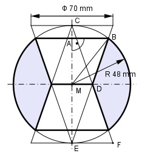

Aufgabe 396 Wie groß ist das Volumen V der Kugel nach dem Aufbohren?

Strahlensatz: EC = 2 * 48 mm = 96 mm MC = MB = 48 mm EF = 70 mm/2 = 35 mm EF MD ---- = ---- |*MC EC MC EF * MC 35 mm * 48 mm MD = --------- = ---------------- = 17,5 mm = r1 EC 96 mm Satz von Pythagoras im Dreieck MBA: MA = MC - CA = 48 mm - CA MB2 = MA2 + AB2 |-MA2 AB2 = MB2 - MA2 = MB2 - (48 - CA)2 AB2 = 482 - (482 - 96 * CA + CA2) AB2 = 482 - 482 + 96 * CA - CA2 AB2 = 96 * CA - CA2 (1) Strahlensatz: AB MD ---------- = ---- |*(EC - CA) EC - CA ME MD * (EC - CA) 17,5 * (96 - CA) AB = ------------------ = ------------------- ME 48 AB = 0,365 * (96 - CA) (2) AB2 = 0,133 * (9 216 - 192 * CA + CA2) AB2 = 1 226 - 25,5 * CA + 0,133 * CA2 Eingesetzt in (1): 1 226 - 25,5 * CA + 0,133 * CA2 = = 96 * CA - CA2 |+CA2 1 226 - 25,5 * CA + 1,133 * CA2 = = 96 * CA |-96 * CA 1,133 * CA2 - 121,5 * CA + 1 226 = 0 A, B, C - Formel: A = 1,133 ; B = -121,5, C = 1 226 -(-121,5) ± CA1,2 = --------------------------------------------- 2 * 1,133 121,5 ± CA1,2 = -------------------------- 2,266 121,5 ± CA1,2 = ------------------ 2,266 121,5 ± 95,95 CA1,2 = ----------------- 2,66 217,45 CA1 = --------- = 81,7 mm > 48 mm --> keine Lösung 2,66 25,55 CA2 = -------- = 9,6 mm = hKugelabschnitt 2,66 hKegelstumpf = MC - CA = 48 mm - 9,6 mm = 38,4 mm CA eingesetzt in (2): 17,5 * (96 - 9,6) AB = -------------------- mm = 31,5 mm = r2 48 V = VKugel - 2 * VKegelstumpf - 2 * VKugelschicht dKugel = 2 * 48 mm = 96 mm dKugel3 * л 963 * mm3 * л VKugel = -------------- = ----------------- = 6 6 = 463 011 mm3 = 463 cm3 л VKegelstumpf = --- * hKegelstumpf * 3 * (r12 + r1 * r2 + r22) л VKegelstumpf = --- * 3 * 38,4 * (17,52 + 17,5 * 31,5 + 31,52) mm3 VKegelstumpf = 74 345 mm3 2 * VKegelstumpf = 2 * 74 345 mm3 = = 148 690 mm3 = 148,7 cm3 л VKugelabschnitt = --- * hKugelabschnitt2 * 3 * (3 * rKugel - hKugelabschnitt) VKugelabschnitt = л = --- * 9,62 * (3 * 48 - 9,6) mm3 = 12 964 mm3 3 2 * VKugelabschnitt = 2 * 12 964 mm3 = = 25 928 mm3 = 25,9 cm3 V = 463 cm3 - 148,7 cm3 - 25,9 cm3 = 288,4 cm3